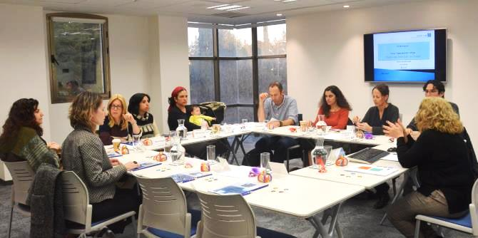

בסדנה להוביל שינוי בארגון הוצגו תיאוריות מרכזיות של שינוי והוצגו מודלים לביצוע תהליכי שינוי במטרה ליצור מודעות ולסייע לבוגרים להתגבר על ההתנגדויות בדרכם למלא את שליחותם החינוכית-חברתית.
רקפת מוסק, מנהלת הייעוצים ביחידת בוגרי מנדל, הציגה בסדנה רעיונות וגישות של חוקרים מובילים בתחומי המנהיגות והובלת תהליכי שינוי, בהם גישתו של פרופ' דויד דרי הרואה במנהיגות פעולה ומעשה הכרוכים בנטילת סיכון וקוראים תגר על מצב קיים ולכן מעוררים עוינות והתנגדות. נדונה גם תפיסת המנהיגות ההסתגלותית של פרופ' רון חפץ ופרופ' מרטי לינסקי מבית הספר למדיניות ציבורית על שם קנדי שבהרווארד, והוצג מודל הפעולה של שני החוקרים, שהדגים כיצד להוביל שינוי ולבנות יכולת הסתגלותית בחברות ובארגונים. לשיטתם, מנהיגות היא פעילות של הנעת התקדמות.
בסדנה נדון גם מודל פעולה של פרופ' ג'ון קרטר להובלת שינוי ב-8 שלבים ונלמדה אבחנתו בין מנהיגות לבין ניהול. כמו כן דנו המשתתפים במאמרם של פרופ' רוברט קיגן וד"ר ליסה לאהיי "כל האמת על אנשים שלא מסוגלים להשתנות", העוסק ב"מחויבויות מתחרות" כסיבה לאי-רצון לשנות ובהתנגדות לשינוי כ"חסינות פנימית". באמצעות הכלי שפיתחו החוקרים למדו המשתתפים כיצד אפשר לזהות את החסם המהותי שמונע השתנות, ודנו בשאלה כיצד אפשר ליישם אותו בארגונים שלהם.
הבוגרים בחנו עצמם ביחס למודלים ולתהליכים שהוצגו, הגדירו את החסמים העומדים בדרכם וביררו מהם הקשיים בתהליך השינוי שהם מבקשים להוביל במסגרת התפקידים שלקחו על עצמם עם סיום לימודיהם. המסקנה העולה מהסדנה היא שהובלת שינוי בצוות, בארגון, בקהילה או בחברה היא מהותה של מלאכת המנהיגות.

{kind=link}